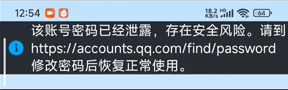

本文实际数据发生时间为2026年2月25日，不保证完全准确，请仔细辨别
编者 / 爱玩机的学生 发布日期 2026-5-5
本文对应视频：www.bilibili.com/video/BV1uDf4BgEMs/
（今天才搭完博客，补一下）
2026年2月25日，我在微云上发现了一个大BUG……
这里我在用QQ登录时，发现说账密已泄露

但是如果我账密泄露，我还能用QQ？或者我还有闲心发视频？
绝！不！会！
这只能是一个BUG，而且十分影响用户体验。有个B友在下面留言：
关键是网页版qq登录就没任何问题，手机版的微云微信也能登上去，这事就很离谱
更加证明了是个BUG……
在这里，我根据现有的知识判断，腾讯应该是不支持QQ登录微云了，感兴趣可以看看 www.bilibili.com/video/BV1zAwkzMEVs
但等等，如果腾讯真的打算砍掉QQ登录微云的路子，那为啥网页版QQ登录还能用？手机微云用微信登录也没问题？
这就很分裂了。
我寻思着，唯一的合理解释是：微云的QQ登录校验接口抽风了，误判了正常账号为“已泄露”，然后就给你弹个红牌警告，吓唬你说“快改密码！快改密码！”
但问题是——我要是真泄露了，你倒是告诉我从哪里泄露的啊？就一句“账密已泄露”，连个来源都没有，这不是制造焦虑吗？
更有意思的来了
我后来试着用同一个QQ号，去微云官网登录，一切正常，甚至QQ邮箱、QQ空间都没问题。
就偏偏微云在喊“狼来了”。
这就好比：
你家大门、卧室门、厨房门全都能正常打开，唯独厕所门报警说“钥匙已泄露，请勿进入”……
那你说是门坏了，还是钥匙真没了？
大概率还是微云自己的风控模型出了bug，把一批正常登录行为识别成了异常。
小概率是腾讯在灰度测试新策略——比如逐步引导用户用微信登录微云，QQ通道慢慢“软禁用”。但从目前网页端还能正常登录来看，这个可能性不大。
极小概率是账号真的泄露了，但如果是这样，我QQ早被盗了，哪还轮得到我在微云上看到这行红字？
如果你也遇到这个提示……
先别慌，去QQ安全中心查一下最近登录记录和授权设备，没有异常就直接忽略。
如果实在不放心，改个QQ密码（顺便把微云的授权踢掉重新登），基本就能解决。
别像我一样较真去测半天，浪费时间——我是因为要做视频，你们没必要。
最后的吐槽
腾讯啊腾讯，你一个万亿市值的公司，微云这种基础产品，能不能把错误提示做得精准一点？
“账密已泄露”这种话，放谁身上都得吓一跳。
结果最后发现是乌龙，你让用户怎么想？
“狼来了”喊多了，下次真的泄露了，谁还信你？
后续动态会更新在这个博客和B站视频评论区，欢迎关注。
（顺便说一句，如果腾讯的人看到这条，麻烦修一下bug，谢谢）